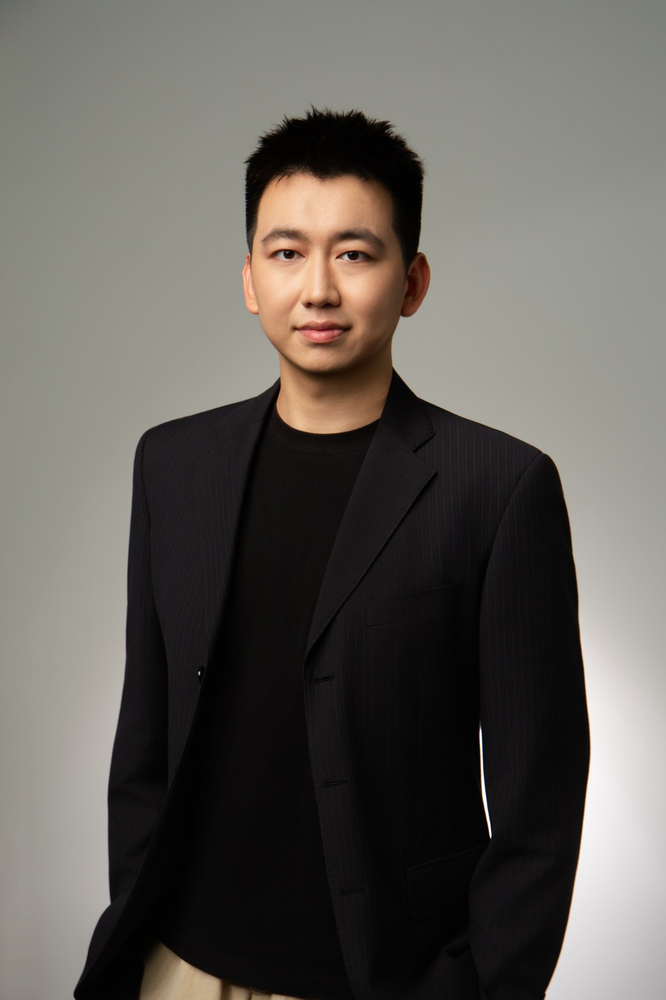

Memristive devices & neuromorphic hardware
Emerging resistive memory, physical dynamics, variability, state evolution, and device fabrication and characterization.
MICROELECTRONICS · SUSTECH
Memristive Devices · Analog In-Memory Computing · Device-Aware AI Hardware
Undergraduate researcher studying how emerging memory-device physics can make computing and learning systems more efficient and robust.

Qunsheng Hou is an undergraduate researcher in Microelectronics at SUSTech. His research lies at the intersection of emerging memory devices, analog in-memory computing, and hardware-aware machine learning.
His current work explores how physical device characteristics and non-idealities can be incorporated into computing and learning systems to improve efficiency and robustness. Since July 2024, he has been an undergraduate researcher in Zhongrui Wang’s Lab.
SUSTech · Expected July 2027
Selected coursework: Materials Science (94/100) · Analog Integrated Circuits (93/100) · GaN Semiconductor Materials and Devices (91/100) · Digital Integrated Circuits (90/100)
Memristive Devices → Device-Aware Computing → Efficient AI Hardware
Emerging resistive memory, physical dynamics, variability, state evolution, and device fabrication and characterization.
Algorithm-hardware co-design that treats device states, variability, and non-idealities as information for computation rather than only as errors.
System-level foundations from hardware architecture, FPGA prototyping, and embodied AI systems.
Co-first author of a study on adaptive programming of redox resistive memory for class-incremental learning. The work studies programming stochasticity and selectively updates high-impact weights to reduce programming overhead and catastrophic forgetting.
Fabricated Ta/Al₂O₃-based capacitors through RCA cleaning, photolithography, LPCVD, ALD, Ta sputtering, ICP etching, and rapid thermal annealing. Performed C–V characterization and SEM-based failure analysis to investigate the effects of tantalum oxidation on capacitance and device integrity.
Y. Li†, J. Yang†, Q. Hou†, et al.
This work investigates hardware-aware adaptive programming for redox resistive memory in class-incremental learning. It considers programming stochasticity and selectively updates high-impact weights to reduce programming overhead and improve robustness against catastrophic forgetting.
† Co-first authors
DOI: 10.1002/adma.202600025Led a four-member team exploring residual reinforcement learning for vision–language–action manipulation and parameter-efficient fine-tuning of the 3-billion-parameter GR00T model.
Developed and validated manipulation pipelines on SO101 and Unitree G1-D platforms, covering simulation, real-time inference, and support for real-world deployment.
Led a three-member team designing a pipelined RV32I CPU in Verilog, with a 2-bit saturating-counter branch predictor and a 4-way set-associative cache.
Verified the processor on a Xilinx Nexys A7 FPGA at 185 MHz.
Python, deep learning, continual learning, CNNs, Mamba, diffusion models, data analysis and visualization.
Memristor-array simulation, cleanroom fabrication, C–V measurement, SEM analysis, Verilog, FPGA prototyping, VLA fine-tuning and robotic deployment.
Second Prize, South China Division — National College Student Integrated Circuit Innovation and Entrepreneurship Competition (July 2025).
Third Prize, FPGA Track — National Undergraduate Embedded Chip and System Design Contest (December 2025).